World Translation: Minimizing Sim-to-Real Gap with Backward Dynamics Extraction and Unpaired Domain Translation
Abstract
The simulation-to-reality gap remains a fundamental challenge in robotics, particularly under partial observability, where time-varying hidden variables — such as contact, collision, and external disturbances — significantly affect dynamics but cannot be predicted from observation history. Learned dynamics models offer a promising path to minimize this gap by capturing domain-specific characteristics directly from data. We observe that simulators and learned models have complementary strengths: simulators explicitly model transient physics but suffer from inaccurate persistent parameters, while learned models capture domain-specific characteristics but cannot infer discontinuously evolving hidden variables.
We propose World Translation, which combines these strengths by reformulating sim-to-real gap minimization as unpaired domain translation over learned dynamics features. Our approach consists of two stages: (1) Backward Dynamics Extraction encodes the effects of hidden variables from observed state transitions into a compact representation, using transition outcomes rather than forward prediction from history; (2) Unpaired Domain Translation maps these features across domains, preserving hidden variable semantics while transforming domain characteristics. This enables the simulator to serve as a source of hidden variable information while correcting for domain mismatch. Experiments on locomotion and manipulation tasks show that World Translation achieves more accurate dynamics modeling than baselines, with the largest gains when hidden variables evolve discontinuously.
Method
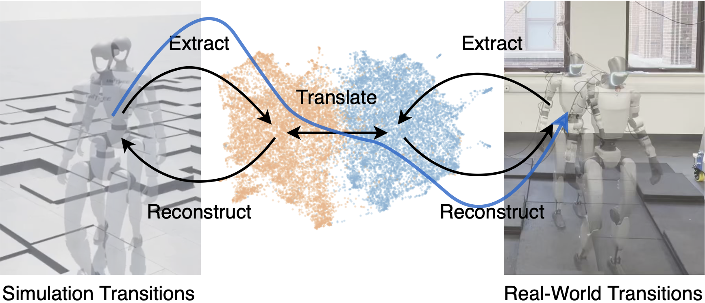
World Translation operates on dynamics features extracted from transitions. During inference, simulation features are translated to the real domain and decoded to predict real-world outcomes.
Backward Dynamics Extraction
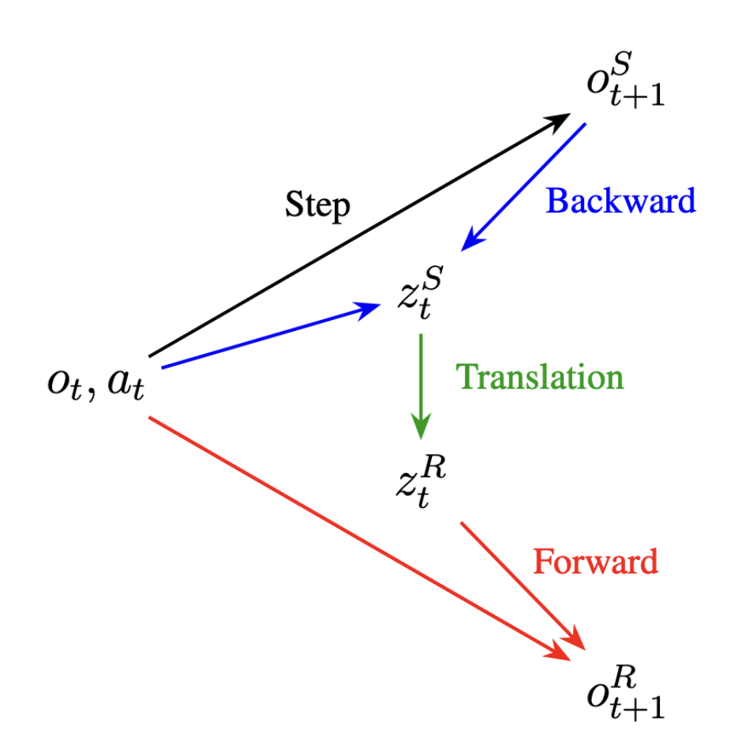
Standard dynamics models predict forward from observation history. But hidden variables ht (contact, collision, external forces) evolve discontinuously — they cannot be anticipated from past observations.
Backward Dynamics Extraction instead uses the transition outcome ot+1 to infer what happened: the encoder takes (ot, at, ot+1) and produces zt = Φ(ht). The decoder then reconstructs ot+1 from (ot, at, zt) in a forward pass.
Unpaired Domain Translation
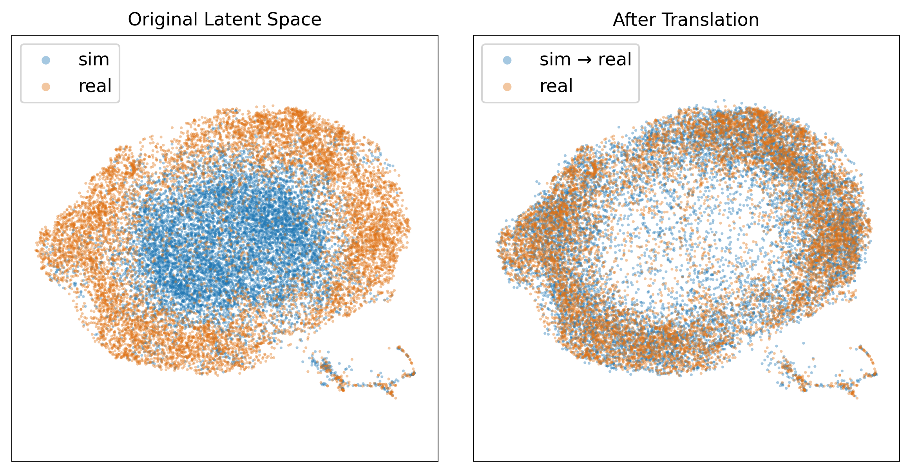
Backward extraction creates a circular dependency at test time: extracting ztR requires real ot+1R, which is exactly what we want to predict. We break this by using the simulator as a source of ztS, then translating it to the real domain.
A CycleGAN maps ztS ↔ ztR, preserving hidden variable semantics (ht) while transforming domain characteristics (cS → cR). The UMAP above shows sim and real features before (separated) and after (aligned) translation.
Dynamics Modeling Results
Each platform is evaluated in two conditions: low-ht (predictable hidden variables) and high-ht (discontinuous hidden variables). World Translation shows the largest gains in the high-ht setting.
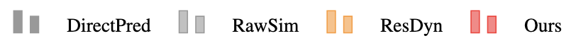
G1 Humanoid — velocity tracking
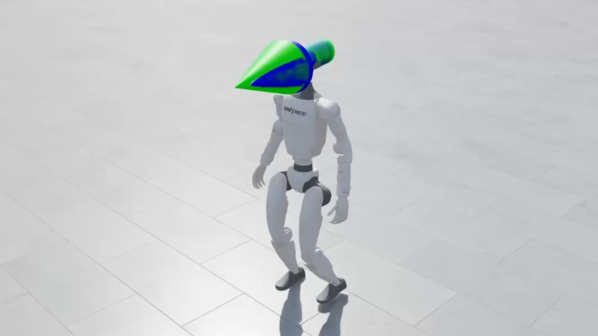
low-ht: flat terrain
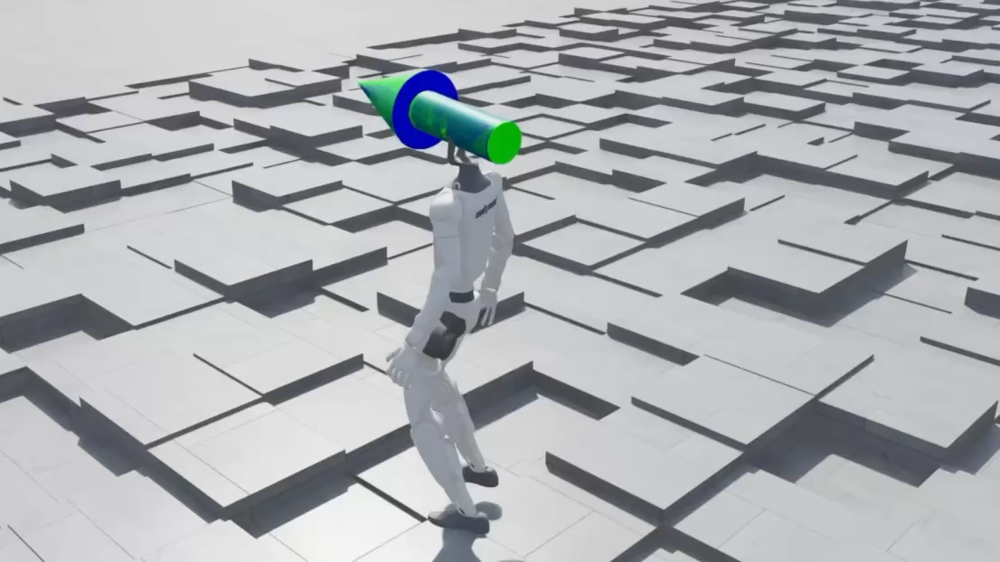
high-ht: irregular stepping blocks
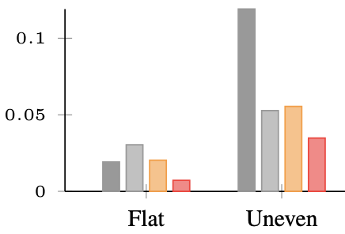
Go2 Quadruped — locomotion
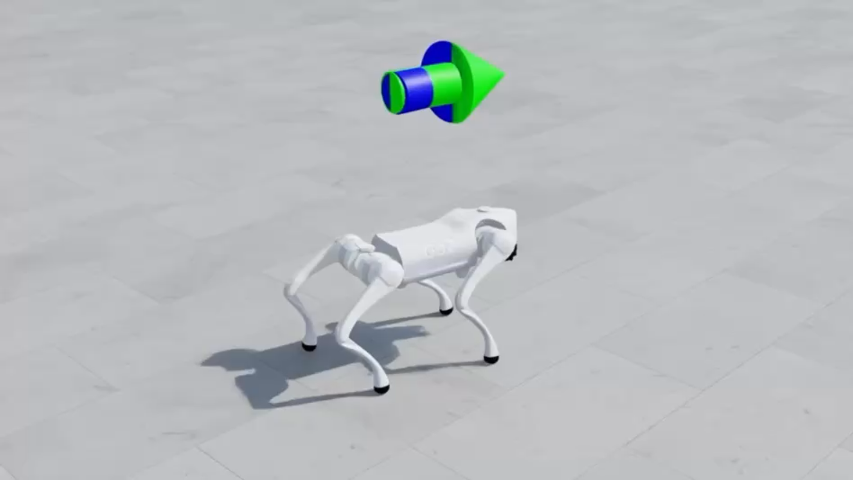
low-ht: no payload
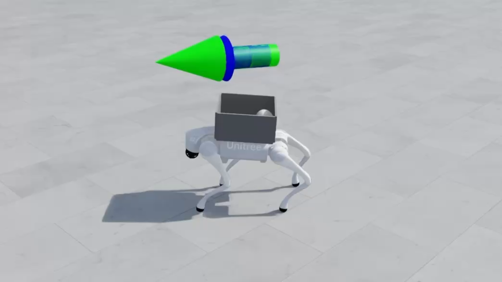
high-ht: 5 kg ball in box
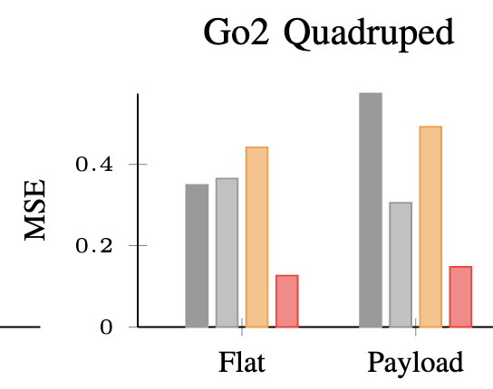
R5 Manipulator — end-effector pose tracking
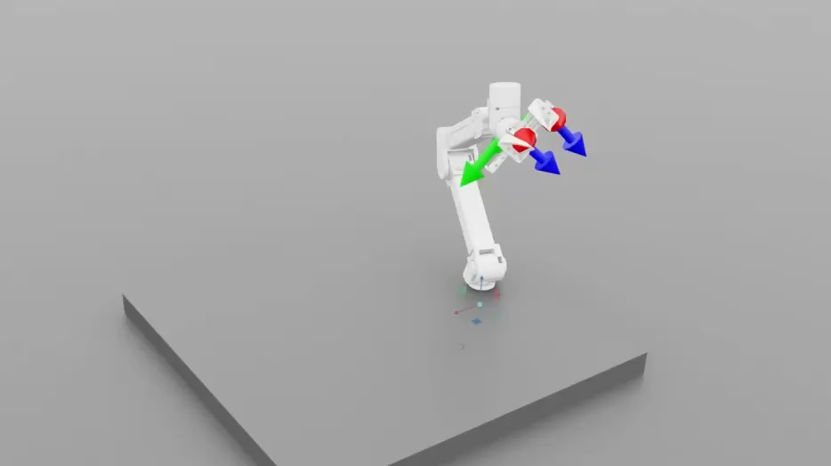
low-ht: free space
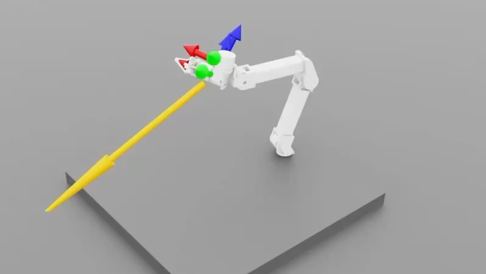
high-ht: 0–200 N external force
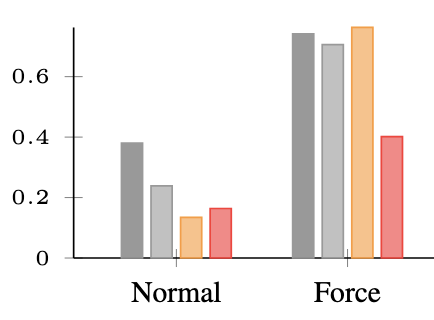
Real Robot Deployment
Go2 quadruped carrying a 5 kg payload. World Translation is used as the dynamics model for policy rollout on the real robot.
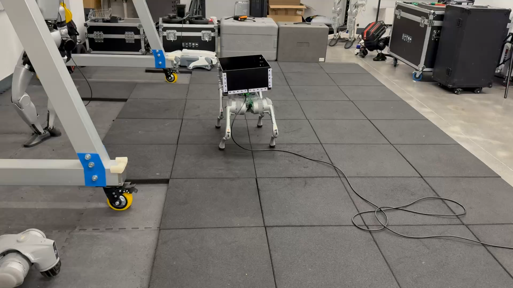
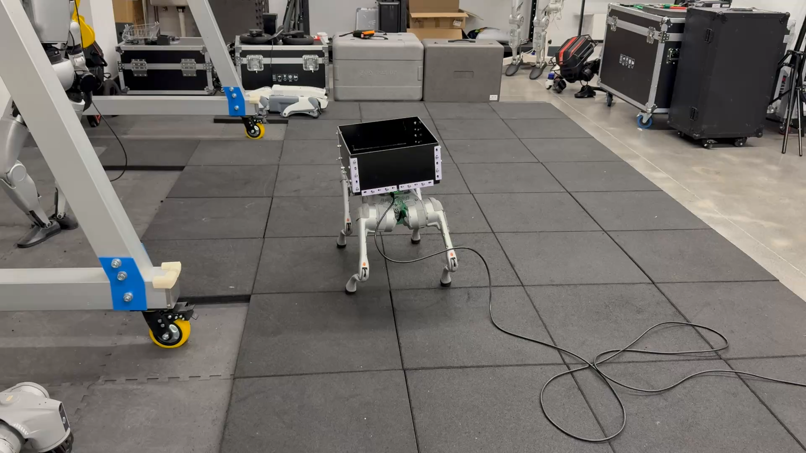
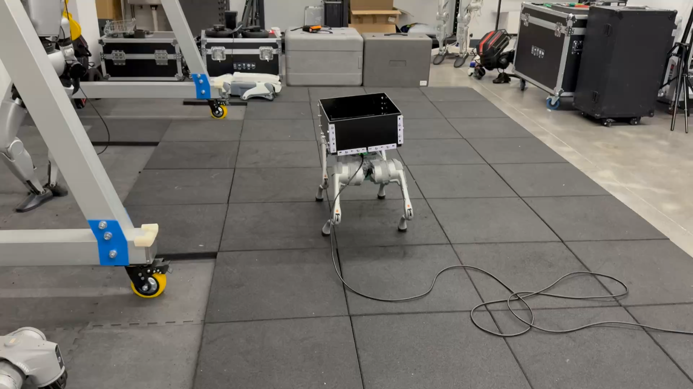
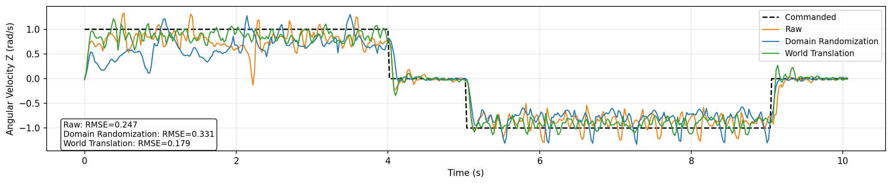
Angular velocity tracking on the real Go2 quadruped. World Translation (RMSE=0.179) outperforms Raw Simulation (0.247) and Domain Randomization (0.331).